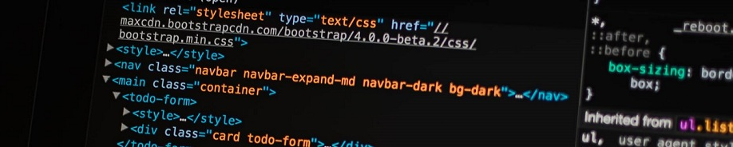

According to W3, HTML stands for Hyper Text Markup Language, and it is the standard markup language for creating Web pages. HTML describes the structure of a Web page, consisting of a series of elements. These elements tell your browser how to display the content of the page.
Tags and attributes
Here, I used my first element tags in HTML. p stands for paragraph, and a stands for anchor. Paragraph organizes your text, images, videos, and other types of content. Anchor links other elements in the web. Two important attributes of Anchor are href (hyperlink reference), which points to a link, and target, which specifies whether the new page will open in the same tab, a different tab or a different window.
Here is a link to my LinkedIn profile. Because I attributed _blank to my target tag, it will open on a different tab. And here is a link to send me an email.
img was another tag that I learned. I used it to include images on this page, with alternative text for accessibility screen readers. Using the tags em for emphasis and strong for strong emphasis also help accessibility.
The last tags I learned were the ones that help me make lists in HTML. I made a list of the tags I learned in this short class. If I wanted my list to be ordered with numbers, I could use the ol (ordered list) tag instead.
- html
- head
- meta
- title
- body
- header
- section
- article
- h1, h2, h3, h4, h5 and h6
- img
- p
- a href
- ul, ol and li